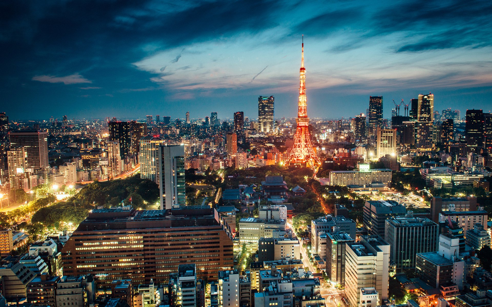

Tokyo is Japan's capital and largest city, with a metropolitan population exceeding 37 million people—making it the most populous urban area on Earth. Located on Honshu island, Tokyo is a global leader in technology, culture, and innovation.
Why Tokyo Qualifies as a City?
Tokyo is designated as a metropolitan prefecture, combining city and regional government functions. It is one of the world's most advanced and densely populated cities, known for its futuristic architecture, efficient systems, and massive economic output.
What Advanced Facilities and Infrastructure are Available?
Tokyo's rail network is the busiest on the planet, with trains known for their extreme punctuality. The Shinkansen bullet trains connect Tokyo to major Japanese cities at speeds up to 200 mph. The city also features cutting-edge robotics research centers, high-tech airports, and some of the world's most advanced urban planning.

Tokyo Fun Facts!
Shibuya Crossing is often called the busiest pedestrian crossing in the world. Tokyo Skytree stands at 634 metres, making it the tallest tower globally. Vending machines are everywhere—over 5 million across Japan, many found in Tokyo.